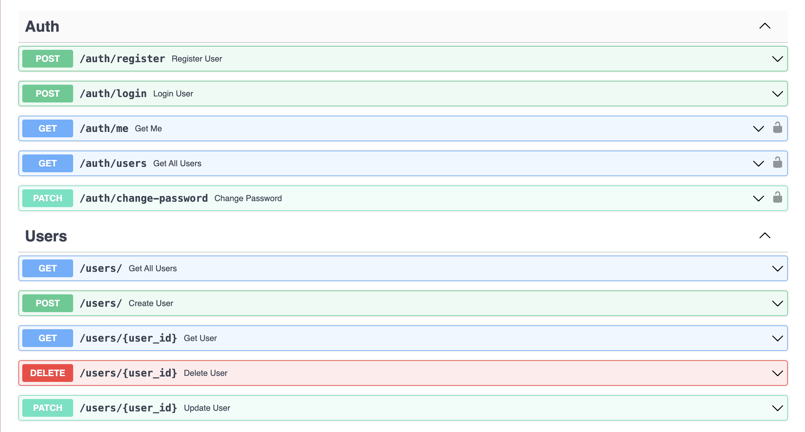
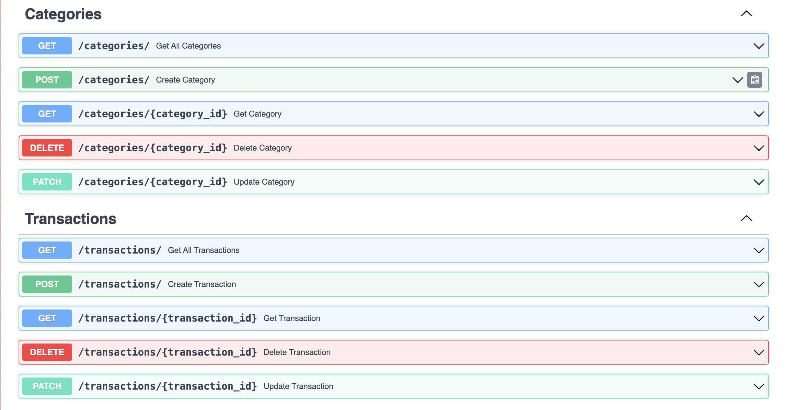
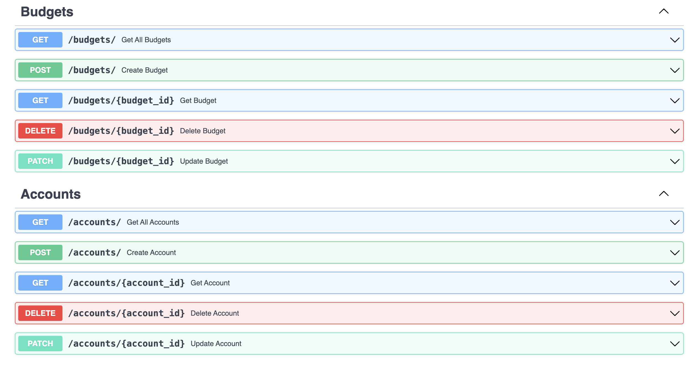
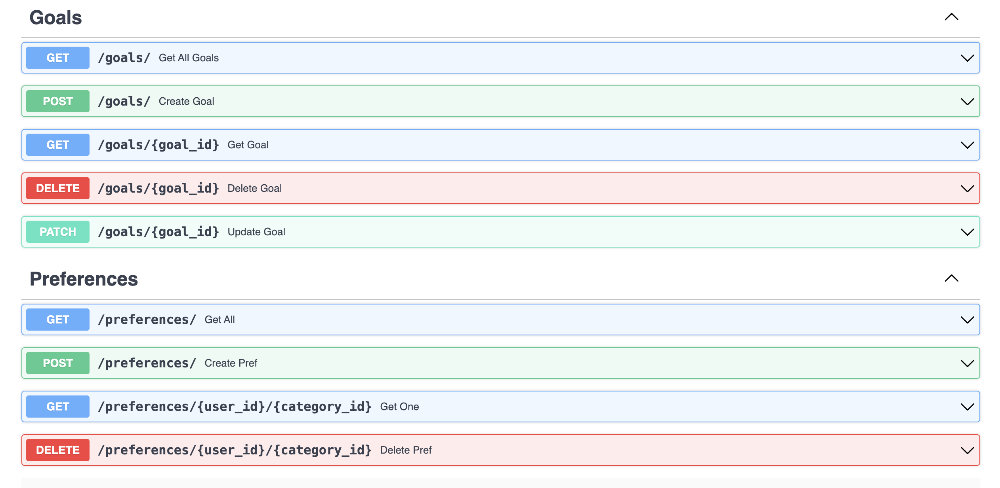

Лабораторная работа 1: Сервис управления личными финансами
Цель
Создать веб-приложение, позволяющее пользователям: - Управлять доходами и расходами - Устанавливать бюджеты на категории - Просматривать финансовые отчёты - Устанавливать финансовые цели - Получать уведомления при превышении бюджета
Основной функционал
- Регистрация, авторизация, JWT, смена пароля
- Управление пользователями
- CRUD для транзакций, аккаунтов, целей, категорий, бюджетов
- Вложенные связи one-to-many, many-to-many
- Автоматическая корректировка баланса счёта при транзакции
- Миграции Alembic
- Разделение на модули и схемы Pydantic
Структура проекта
app/
├── core/ # Аутентификация
├── db/ # Подключение к БД
├── models/ # SQLModel модели
├── routers/ # FastAPI роутеры
├── schemas/ # Pydantic-схемы
main.py # Точка входа
Аутентификация
/auth/register— регистрация/auth/login— вход/auth/me— информация о себе/auth/change-password— смена пароля- Используется HTTPBearer
Пользователи
GET /users/— списокGET /users/{id}— пользователь с вложенными отношениямиPATCH /users/{id}— обновлениеDELETE /users/{id}— удаление
Транзакции
POST /transactions/— созданиеGET /transactions/— списокGET /transactions/{id}— с вложенными user, category, accountPATCH /transactions/{id}— пересчёт балансовDELETE /transactions/{id}— возврат суммы из счёта
Счета
POST /accounts/GET /accounts/GET /accounts/{id}— с вложенными транзакциямиPATCH /accounts/{id}DELETE /accounts/{id}
Категории
POST /categories/GET /categories/GET /categories/{id}— с предпочтениями пользователейPATCH /categories/{id}DELETE /categories/{id}
Бюджеты
POST /budgets/GET /budgets/GET /budgets/{id}— с вложенными user и categoryPATCH /budgets/{id}DELETE /budgets/{id}
Цели
POST /goals/GET /goals/GET /goals/{id}— с вложенным userPATCH /goals/{id}DELETE /goals/{id}
Предпочтения категорий (many-to-many)
POST /preferences/GET /preferences/GET /preferences/{user_id}/{category_id}DELETE /preferences/{user_id}/{category_id}
Модели данных
User←→Transaction,Account,Goal,Budget,UserCategoryPreferenceTransaction— содержит связи сCategory,AccountBudget— связываетUserиCategoryUserCategoryPreference— many-to-many с полемnotification_enabled
Swagger




Миграции
Миграции управляются через Alembic, примеры:
alembic revision --autogenerate -m "Initial"
alembic upgrade head
/core/auth.py
import os
import jwt
from passlib.hash import bcrypt
from fastapi import HTTPException, status, Depends, Security
from fastapi.security import HTTPBearer, HTTPAuthorizationCredentials
from sqlmodel import Session
from datetime import datetime, timedelta
from app.db.connection import get_session
from app.models.finance_models import User
JWT_SECRET = os.getenv("JWT_SECRET", "SUPERSECRET")
JWT_ALGORITHM = "HS256"
ACCESS_TOKEN_EXPIRE_MINUTES = 60
# Определяем схему безопасности
bearer_scheme = HTTPBearer()
# хэширование
def hash_password(password: str) -> str:
return bcrypt.using(rounds=12).hash(password)
def verify_password(plain_password: str, hashed_password: str) -> bool:
return bcrypt.verify(plain_password, hashed_password)
# JWT
def create_access_token(user_id: int) -> str:
expire = datetime.utcnow() + timedelta(minutes=ACCESS_TOKEN_EXPIRE_MINUTES)
payload = {
"sub": str(user_id),
"exp": expire
}
token = jwt.encode(payload, JWT_SECRET, algorithm=JWT_ALGORITHM)
return token
def decode_access_token(token: str) -> int:
try:
payload = jwt.decode(token, JWT_SECRET, algorithms=[JWT_ALGORITHM])
user_id = int(payload["sub"])
return user_id
except jwt.ExpiredSignatureError:
raise HTTPException(
status_code=status.HTTP_401_UNAUTHORIZED,
detail="Token expired"
)
except jwt.InvalidTokenError:
raise HTTPException(
status_code=status.HTTP_401_UNAUTHORIZED,
detail="Invalid token"
)
def get_current_user(
credentials: HTTPAuthorizationCredentials = Security(bearer_scheme),
session: Session = Depends(get_session)
) -> User:
"""
Функция вызывается при каждом запросе к защищённому эндпоинту.
1) HTTPBearer сам найдёт заголовок "Authorization: Bearer <token>"
2) credentials.credentials = "<token>"
3) Декодируем токен и получаем user_id
4) Ищем пользователя в БД
"""
token = credentials.credentials
user_id = decode_access_token(token)
user = session.get(User, user_id)
if not user:
raise HTTPException(
status_code=status.HTTP_401_UNAUTHORIZED,
detail="User not found"
)
return user
/models/finance_models.py
from typing import Optional, List
from sqlmodel import SQLModel, Field, Relationship
from datetime import datetime
class User(SQLModel, table=True):
id: Optional[int] = Field(default=None, primary_key=True)
username: str
email: str
hashed_password: str
transactions: List["Transaction"] = Relationship(back_populates="user")
budgets: List["Budget"] = Relationship(back_populates="user")
accounts: List["Account"] = Relationship(back_populates="user")
goals: List["Goal"] = Relationship(back_populates="user")
category_preferences: List["UserCategoryPreference"] = Relationship(back_populates="user")
class Category(SQLModel, table=True):
id: Optional[int] = Field(default=None, primary_key=True)
name: str
transactions: List["Transaction"] = Relationship(back_populates="category")
budgets: List["Budget"] = Relationship(back_populates="category")
user_preferences: List["UserCategoryPreference"] = Relationship(back_populates="category")
class Transaction(SQLModel, table=True):
id: Optional[int] = Field(default=None, primary_key=True)
user_id: int = Field(foreign_key="user.id")
category_id: int = Field(foreign_key="category.id")
account_id: Optional[int] = Field(default=None, foreign_key="account.id")
amount: float
description: Optional[str] = None
created_at: datetime = Field(default_factory=datetime.utcnow)
user: Optional[User] = Relationship(back_populates="transactions")
category: Optional[Category] = Relationship(back_populates="transactions")
account: Optional["Account"] = Relationship(back_populates="transactions")
class Budget(SQLModel, table=True):
id: Optional[int] = Field(default=None, primary_key=True)
user_id: int = Field(foreign_key="user.id")
category_id: int = Field(foreign_key="category.id")
limit_amount: float
user: Optional[User] = Relationship(back_populates="budgets")
category: Optional[Category] = Relationship(back_populates="budgets")
class Account(SQLModel, table=True):
id: Optional[int] = Field(default=None, primary_key=True)
user_id: int = Field(foreign_key="user.id")
name: str
balance: float = 0.0
user: Optional[User] = Relationship(back_populates="accounts")
transactions: List[Transaction] = Relationship(back_populates="account")
class Goal(SQLModel, table=True):
id: Optional[int] = Field(default=None, primary_key=True)
user_id: int = Field(foreign_key="user.id")
title: str
target_amount: float
deadline: Optional[datetime] = None
current_amount: float = 0.0
user: Optional[User] = Relationship(back_populates="goals")
class UserCategoryPreference(SQLModel, table=True):
user_id: int = Field(foreign_key="user.id", primary_key=True)
category_id: int = Field(foreign_key="category.id", primary_key=True)
notification_enabled: bool = Field(default=True)
user: Optional[User] = Relationship(back_populates="category_preferences")
category: Optional[Category] = Relationship(back_populates="user_preferences")
/schemas/finance_schemas.py
from typing import Optional, List
from datetime import datetime
from pydantic import BaseModel
class UserRegister(BaseModel):
username: str
email: str
password: str
class UserLogin(BaseModel):
username_or_email: str
password: str
class UserOut(BaseModel):
id: int
username: str
email: str
class Config:
from_attributes = True
class CreateCategory(BaseModel):
name: str
class CreateTransaction(BaseModel):
user_id: int
category_id: int
account_id: Optional[int] = None
amount: float
description: Optional[str] = None
class CreateBudget(BaseModel):
user_id: int
category_id: int
limit_amount: float
class CreateAccount(BaseModel):
user_id: int
name: str
balance: float = 0.0
class CreateGoal(BaseModel):
user_id: int
title: str
target_amount: float
deadline: Optional[datetime] = None
current_amount: float = 0.0
# Для чтения:
class ReadCategory(BaseModel):
id: int
name: str
class Config:
from_attributes = True
class ReadTransaction(BaseModel):
id: int
amount: float
description: Optional[str]
created_at: datetime
account_id: Optional[int] = None
class Config:
from_attributes = True
class ReadBudget(BaseModel):
id: int
limit_amount: float
class Config:
from_attributes = True
class ReadAccount(BaseModel):
id: int
name: str
balance: float
class Config:
from_attributes = True
class ReadGoal(BaseModel):
id: int
title: str
target_amount: float
current_amount: float
deadline: Optional[datetime]
class Config:
from_attributes = True
class CreateUserCategoryPreference(BaseModel):
user_id: int
category_id: int
notification_enabled: bool = True
class ReadUserCategoryPreference(BaseModel):
user_id: int
category_id: int
notification_enabled: bool
class Config:
from_attributes = True
# ----------------------------------------------------------------
# ----------------------------------------------------------------
# ----------------------------------------------------------------
class ReadUserWithRelations(UserOut):
accounts: List[ReadAccount] = []
transactions: List[ReadTransaction] = []
budgets: List[ReadBudget] = []
goals: List[ReadGoal] = []
category_preferences: List[ReadUserCategoryPreference] = []
class Config:
from_attributes = True
class ReadAccountWithTransactions(ReadAccount):
transactions: List[ReadTransaction] = []
class Config:
from_attributes = True
class ReadCategoryWithUsers(ReadCategory):
user_preferences: List[ReadUserCategoryPreference] = []
class Config:
from_attributes = True
class ReadGoalWithUser(ReadGoal):
user: Optional[UserOut] = None
class Config:
from_attributes = True
class ReadBudgetFull(ReadBudget):
user: Optional[UserOut] = None
category: Optional[ReadCategory] = None
class Config:
from_attributes = True
class ReadTransactionFull(ReadTransaction):
user: Optional[UserOut] = None
category: Optional[ReadCategory] = None
account: Optional[ReadAccount] = None
class Config:
from_attributes = True
/routers/users.py
from fastapi import APIRouter, Depends, HTTPException
from sqlmodel import select
from typing import List
from sqlmodel import Session
from sqlalchemy.orm import selectinload
from app.db.connection import get_session
from app.models.finance_models import User
from app.schemas.finance_schemas import UserRegister, UserOut, ReadUserWithRelations
router = APIRouter(prefix="/users", tags=["Users"])
@router.post("/", response_model=UserOut)
def create_user(user: UserRegister, session: Session = Depends(get_session)):
new_user = User(
username=user.username,
email=user.email
)
session.add(new_user)
session.commit()
session.refresh(new_user)
return new_user
@router.get("/", response_model=List[UserOut])
def get_all_users(session: Session = Depends(get_session)):
result = session.exec(select(User)).all()
return result
@router.get("/{user_id}", response_model=ReadUserWithRelations)
def get_user(user_id: int, session: Session = Depends(get_session)):
stmt = (
select(User)
.where(User.id == user_id)
.options(
selectinload(User.accounts),
selectinload(User.transactions),
selectinload(User.budgets),
selectinload(User.goals),
selectinload(User.category_preferences)
)
)
user = session.exec(stmt).first()
if not user:
raise HTTPException(status_code=404, detail="User not found")
return user
@router.patch("/{user_id}", response_model=UserOut)
def update_user(user_id: int, user_data: UserRegister, session: Session = Depends(get_session)):
db_user = session.get(User, user_id)
if not db_user:
raise HTTPException(status_code=404, detail="User not found")
db_user.username = user_data.username
db_user.email = user_data.email
session.add(db_user)
session.commit()
session.refresh(db_user)
return db_user
@router.delete("/{user_id}")
def delete_user(user_id: int, session: Session = Depends(get_session)):
db_user = session.get(User, user_id)
if not db_user:
raise HTTPException(status_code=404, detail="User not found")
session.delete(db_user)
session.commit()
return {"ok": True}